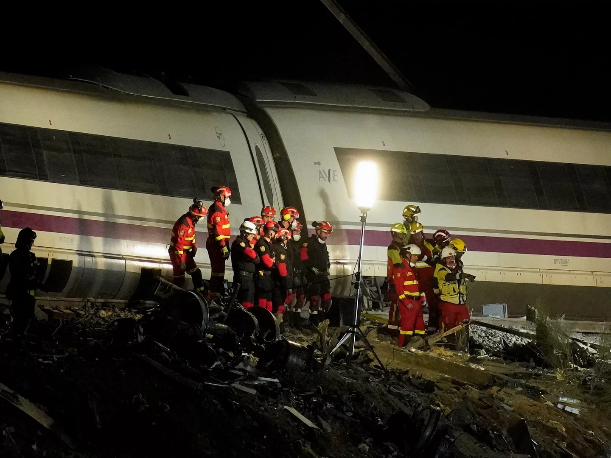

Zoektocht gaat hele nacht door • Zeker 68 doden, 107 mensen in ziekenhuis
De zoektocht naar slachtoffers gaat de hele nacht door. Dat zegt een woordvoerder van de Guardia Civil, de Spaanse politie, tegen persbureau EFE. Er zal worden doorgezocht "totdat er niemand meer vastzit", belooft ze. Ook is zwaar materieel ingezet op de rampplek om delen van de wagons te verwijderen.